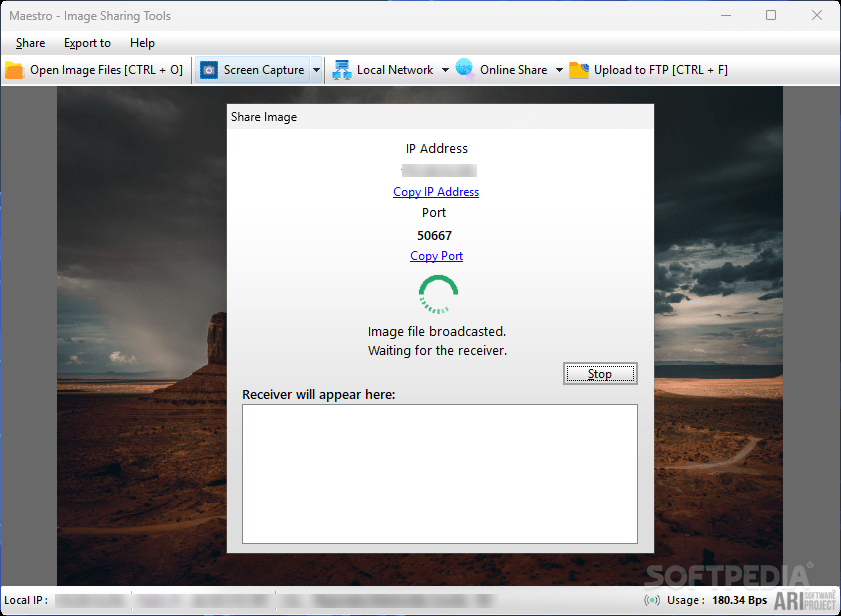

Innovative Software for Every Need.

Phone/WhatsApp: +62 813 5356 1716
Innovative Software for Every Need. |
|
Email: users.ariproject@gmail.com Phone/WhatsApp: +62 813 5356 1716 |
Maestro |
View local images and share them with the world with this two-in-one solution, which includes various amenities to make sharing easier |
 |
| Maestro | 1.0 | 1.9 MB | Download | 1.0 |
Maestro is a tool designed to meet the growing needs of users who frequently post and share images online. By combining the functionality of an image viewer with seamless sharing options, Maestro offers a user-friendly solution for viewing and distributing your photos, whether via social media, email, or cloud services. Key Features of Maestro
Areas for Improvement
Why Choose Maestro?Maestro stands out as a hybrid tool that combines image viewing and sharing into a single, easy-to-use application. Whether you're looking to quickly view photos, capture screenshots, or share images over a network or on the web, Maestro delivers a simple solution for all these tasks. However, for users seeking more advanced photo viewing, editing, or customization options, Maestro’s current feature set may feel limited. For those who prioritize convenience and ease of use, Maestro presents a solid initial offering that addresses both viewing and sharing needs effectively. |
Copyright (C) 2025 Ari Sohandri Putra. Read License Terms